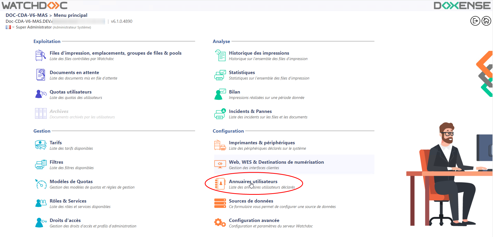
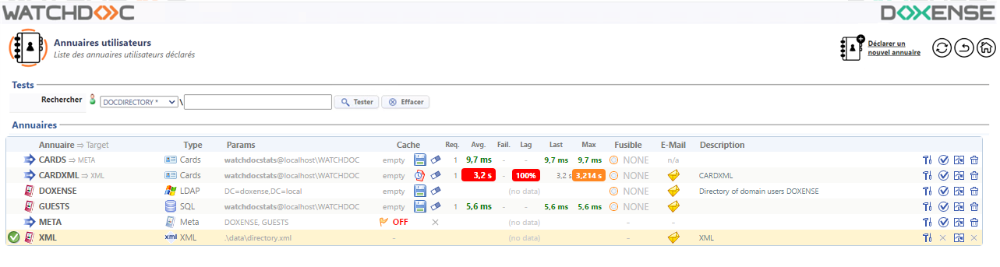
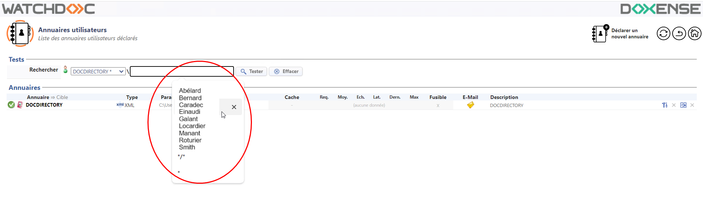

Accéder à l'interface de configuration
Depuis le Menu principal de l'interface d'administration,
-
dans la section Configuration, cliquez sur Annuaires utilisateurs :

→ Vous accédez à la liste des annuaires déclarés pour votre instance Watchdoc constituée de deux sections : Tests et Annuaire :

Description de la section Tests
La section Test contient un moteur permettant de rechercher un utilisateur au sein d'un annuaire spécifique.
Pour lancer la recherche d'un utilisateur :
-
sélectionnez l'un des annuaires dans la liste ;
-
saisissez l'identifiant (login) de l'utilisateur recherché dans le champ de saisie ;
-
cliquez sur le bouton tester pour lancer la recherche.

→ Le résultat de votre recherche s'affiche dans la section Test.
Description de la section Annuaires : outils de gestion
La section Annuaires affiche l'ensemble des annuaires déclarés dans l'application Watchdoc®.
Chaque ligne présentant un annuaire comporte les outils suivants :
-
Le bouton Modifier cet annuaire
 permet d'ouvrir l'annuaire dans une interface de configuration ;
permet d'ouvrir l'annuaire dans une interface de configuration ; -
Le bouton Définir comme annuaire par défaut permet d'appliquer à l'annuaire le statut spécifique d'annuaire exploité en prorité par Watchdoc®. Dans la liste, l'annuaire par défaut est surligné et précédé de l'icone .
-
le bouton Dupliquer cet annuaire permet de prendre un annuaire comme modèle pour créer un nouvel annuaire plutôt que de le reconfigurer ex-nihilo.
-
le bouton Supprimer cet annuaire est utilisé dans le cas où l'annuaire n'est plus utile.
Description de la section Annuaires : informations
Types des annuaires
Les annuaires affichés dans ces listes sont accompagnés des informations suivantes :
-
La colonne Annuaire => Target affiche le nom des annuaires. Dans cette liste, l'annuaire désigné par défaut est surligné et précédé de l'icone . La flèche et le nom de l'annuaire qui suit indiquent l'annuaire désigné comme "cible
 L'annuaire cible est un annuaire dans lequel un annuaire Alias/Proxy mène des recherches pour compléter une information qu'elle détient. Par exemple, un annuaire Alias/Proxy contenant la correspondance entre un n° de badge et un login complètera l'information relative aux utilisateurs, à partir de leur login, en cherchant dans l'annuaire donc être désigné comme cible de l'annuaire Alias/Proxy.", c'est-à-dire comme un annuaire de destination fournissant des informations complémentaires à un autre annuaire.
L'annuaire cible est un annuaire dans lequel un annuaire Alias/Proxy mène des recherches pour compléter une information qu'elle détient. Par exemple, un annuaire Alias/Proxy contenant la correspondance entre un n° de badge et un login complètera l'information relative aux utilisateurs, à partir de leur login, en cherchant dans l'annuaire donc être désigné comme cible de l'annuaire Alias/Proxy.", c'est-à-dire comme un annuaire de destination fournissant des informations complémentaires à un autre annuaire.
-
La colonne Type précise le type de l'annuaire (cf. Annuaires - Présentation) :
-
Cards : annuaire de correspondance entre les badges et les logins des utilisateurs
-
Microsft Entra ID (Azure Active Directory) : annuaire de l'organisation constituant l'annuaire utilisateurs
-
Code d'impression (Code PUK) : codes d'impression associés aux utilisateurs Entra ID (Azure AD)
-
Active Directory / LDAP : annuaire de l'organisation constituant l'annuaire utilisateurs
-
SQL : annuaire fondé sur une base SQL. Par défaut, Watchdoc® génère deux annuaires SQL :
-
- l'annuaire CARDS permettant la gestion des badges d'accès
- l'annuaire GUESTS permettant la gestion des invités
-
Meta : super-annuaire Méta servant à mener des recherches dans une combinaison d'annuaires
-
XML : annuaire fondé sur un fichier .xml constituant l'annuaire utilisateurs dans le cas où l'organisation ne dispose pas d'annuaire LDAP
-
CSV : annuaire fondé sur un fichier .csv, généralement de type alias, permettant de compléter les données des autres annuaires
-
-
La colonne Params affiche les paramètres fondamentaux de l'annuaire :
-
nom et localisation dans la base de statistiques pour les annuaires de type Cards ;
-
référence au contrôleur de domaine (DC) de l'annuaire LDAP ;
-
annuaires couverts pour l'annuaire Meta
-
nom du fichier .xml et localisation.
-
-
La colonne Cache affiche des informations relatives à l'état de la mémoire cache:
-
empty signale un cache vide (dans quel cas de figure par rapport à un cache à 0 % ?)
-
taux de pourcentage indique le taux d'occupation du cache de l'annuaire ;
-
0 % : signale un cache activé mais ne contenant aucune donnée ;
-
OFF : signale que le cache de l'annuaire n'est pas activé.
-
l'icone Stored to disk signale que les données du cache sont enregistrées sur le serveur et peuvent être rechargées en mémoire au prochain redémarrage du service Watcdoc®. Cet icone correspond au paramètre de persistance.
-
l'icone Stored in Memory signale que les données du cache sont enregistrées en mémoire tampon dont la durée est prédéfinie.
-
l'icone Vider le cache permet de supprimer les données enregistrées dans le cache et de remettre le compteur à zéro.
-
-
La colonne Req. affiche le nombre de requêtes effectuées sur l'annuaire depuis le démarrage du service Watchdoc® ou action de reset du cache.
-
la colonne Avg. affiche, en millisecondes, le temps moyen nécessaire à la réponse de l'annuaire après réception de la requête.
-
la colonne Fail. affiche une valeur correspondant au nombre d'échecs de la requête sur l'annuaire.
-
la colonne Last affiche, en millisecondes, le délai nécessaire à l'exécution et la réception de la dernière requête sur l'annuaire.
-
la colonne Max affiche, en millisecondes, le délai maximum observé pour les requêtes portant sur l'annuaire (depuis le démarrage du service Watchdoc ou la réinitialisation du cache).
-
la colonne Fusible affiche l'information selon laquelle un fusible a été configuré.
-
la colonne E-Mail affiche l'information selon laquelle un e-mail a été configuré dans l'annuaire. Cet annuaire contient donc des adresses e-mail des utilisateurs qui peuvent être utilisées comme critères de recherche dans l'annuaire :
-
la mention n/a indique qu'aucune adresse mail n'a été renseignée dans l'annuaire ;
-
l'icone e-mail indique qu'une adresse mail a été renseignée dansl'annuaire.
-
-
la colonne Description affiche la description saisie par l'administrateur lors de la déclaration de l'annuaire.